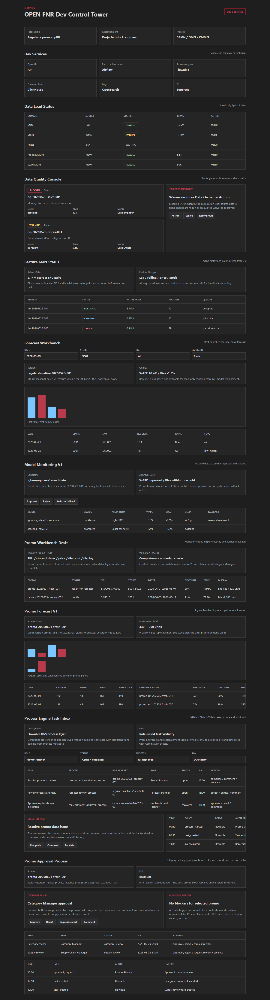

OPEN FNR Sprint 10: Promo Approval Process
Аннотация: тестируем end-to-end согласование промо после расчета uplift: риск-классификация, маршрут Category Manager + Supply Chain Manager, rework/reject ветки, shortage case, RBAC и audit каждого решения.
Что тестируем
| Область | Что делаем | Зачем | Факт |
|---|---|---|---|
| Promo approval API | Открываем /promo/approvals/promo-20260601-fresh-001. |
Проверяем маршрут, статусы, SLA, действия и publication readiness. | Маршрут и действия получены. |
| Risk DMN | Проверяем low/medium/high классификацию по скидке, uplift и stock. | Риск должен управлять маршрутом согласования. | Классификация работает. |
| RBAC | Promo Planner пытается approve задачу Category Manager. | Проверяем запрет чужого решения. | Получен HTTP 403. |
| Audit | Category Manager делает approve с комментарием. | Решение должно быть восстановимо из истории. | Созданы audit events. |
UI-тестирование
- Открываем экран и находим блок
Promo Approval Process. - Проверяем карточку промо и process instance.
- Проверяем risk panel: уровень Medium и причины риска.
- Проверяем decision panel: Approve, Reject, Request rework, Comment.
- Проверяем blocking errors: для выбранного промо блокеров нет.
- Проверяем таблицу шагов: Category review и Supply review с ролями, SLA и действиями.
- Проверяем timeline: approval_requested, task_created для category и supply.

Бизнес-процесс по шагам
| Шаг | Действие | Почему | Ожидаемый/фактический результат |
|---|---|---|---|
| 1 | Promo forecasted запускает promo_planning_process. |
Согласование начинается только после расчета uplift. | BPMN содержит start event Promo forecasted. |
| 2 | DMN promo_risk_classification определяет риск. |
Высокий риск требует расширенного маршрута. | Low/medium/high проверены тестами. |
| 3 | DMN promo_approval_route выбирает роли. |
UI и backend не должны hardcode-ить маршрут. | Route: Category Manager, Supply Chain Manager. |
| 4 | Category Manager принимает решение. | Проверяются коммерческие условия: SKU, скидка, цена, механика. | Approve разрешен только Category Manager. |
| 5 | Supply Chain Manager принимает решение. | Проверяются stock, capacity, shortage и возможность поставки. | Supply task и shortage case описаны. |
| 6 | Rework/reject ветки возвращают или отклоняют промо. | Нельзя публиковать промо с блокерами. | BPMN содержит rework и reject paths. |
Автоматические проверки
| Команда | Результат |
|---|---|
python -m pytest |
79 passed |
npm.cmd run build |
Frontend build completed |